Actividad 16: Adquisición forense con FTK Imager
Reporte Original
Documentación de la adquisición forense // Extensión: .pdf
¿Qué es una Imagen Forense Bit a Bit?
Una imagen forense copia todos los sectores de un dispositivo, incluyendo el espacio no asignado y archivos borrados, y no solo los archivos visibles[cite: 13]. Se trabaja exclusivamente sobre esta copia para garantizar que la evidencia original quede intacta, preservando su validez legal y permitiendo responder a incidentes.
Objetivo de la Evaluación
Obtener una copia exacta de un dispositivo de almacenamiento (USB de 15 GB) utilizando la herramienta FTK Imager[cite: 13, 14]. El proceso incluye configurar los metadatos del caso, generar una imagen en formato Raw (dd) fragmentada a 1500 MB y demostrar la integridad de la copia verificando los algoritmos hash MD5 y SHA-1[cite: 13, 14].
Simulador de Adquisición (CLI Mode)
Resultados de la Adquisición Forense
| Elemento / Parámetro | Detalle o Resultado |
|---|---|
| Evidencia Origen | SanDisk Cruzer Blade USB Device, 15 GB (\\.\PHYSICALDRIVE3)[cite: 14] |
| Formato y Fragmentación | Raw (dd) / Fragmentos de 1500 MB (10 segmentos generados)[cite: 14, 29, 30] |
| Inicio y Término de Adquisición | 14:40:15 - 14:50:19 (0:10:04 Elapsed Time)[cite: 23, 28, 33] |
| Sectores y Tamaño Origen | 30,031,872 sectores (14664 MB de datos)[cite: 24, 29] |
| Verificación MD5 | 6060be327445deec73a3f2609c480f3d (Match)[cite: 29] |
| Verificación SHA-1 | 293496cefb3ce40238c9c8d58d271ee6aad1ea49 (Match)[cite: 29] |
| Bloques Dañados | Ninguno (No bad blocks found in image)[cite: 25, 29] |
Comparación de Formatos Forenses
Se utilizó el formato Raw (dd) por ser el estándar crudo y universal. Sin embargo, en el ámbito forense profesional también se utilizan formatos como E01 y SMART, que permiten compresión y encapsulan los datos del caso y hashes dentro del mismo archivo, a diferencia del Raw que requiere un .txt separado[cite: 31].
| Característica[cite: 31] | Raw (dd)[cite: 31] | E01 (EnCase)[cite: 31] | SMART (.s01)[cite: 31] |
|---|---|---|---|
| Extensión Típica | .dd, .raw, .001 | .E01, .E02 | .s01 |
| Admite Compresión | No | Sí | Sí |
| Datos en Archivo | No, van en un .txt aparte | Sí | Limitados |
| Verificación Interna | No, depende de hashes externos | Sí | Sí |
| Compatibilidad | Muy alta | Muy alta | Menor |
Procedimiento de Adquisición (Kill Chain)
Etapa A. Preparación de la herramienta
Instalación como Administrador[cite: 15]
Se instaló y ejecutó FTK Imager con permisos de administrador en el equipo de trabajo, necesarios para poder acceder directamente a dispositivos físicos como \\.\PHYSICALDRIVE y evitar bloqueos de Windows[cite: 15].
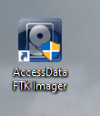
Validación de la Herramienta[cite: 15, 16]
Se abrió el programa y se confirmó que la interfaz cargó sin errores antes de conectar la evidencia. Se registró la versión de la herramienta 4.3.1.1 para efectos de reproducibilidad técnica en el reporte[cite: 15, 16].
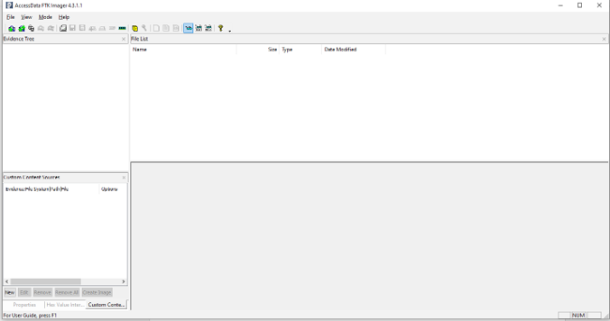
Etapa B. Configuración de la Adquisición
Conexión e Inicio de Copia[cite: 16, 17]
Se conectó la evidencia USB minimizando su tiempo de exposición. En el menú de FTK Imager, se seleccionó la opción File > Create Disk Image... para iniciar el asistente de copiado[cite: 16, 17].
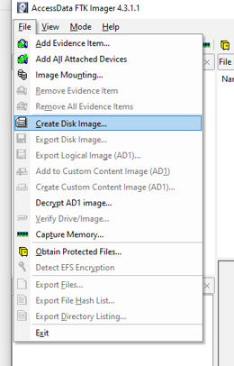
Selección del Tipo de Origen[cite: 17, 18]
En el cuadro de diálogo se seleccionó Physical Drive, lo que garantiza copiar el dispositivo completo incluyendo la tabla de particiones, espacio no asignado y restos de archivos borrados[cite: 17, 18].
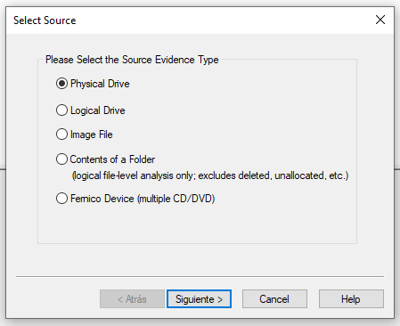
Selección del Dispositivo Físico[cite: 18]
De la lista desplegable se escogió el objetivo preciso: \\.\PHYSICALDRIVE3 - SanDisk Cruzer Blade (15 GB). Esta confirmación es crítica para evitar clonar por accidente discos duros internos del equipo forense[cite: 18].
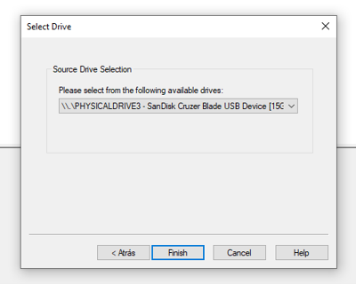
Definición de Destino[cite: 19]
Con el origen establecido, se hizo clic en el botón Add... para configurar el formato de la imagen y la ruta en donde se guardaría la copia bit a bit en la estación forense[cite: 19].
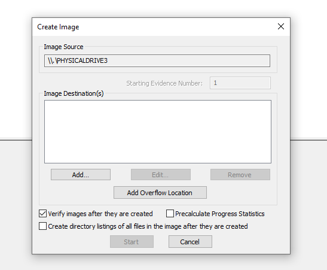
Formato de la Imagen Forense[cite: 19]
Se seleccionó el formato Raw (dd). Esto genera una copia exacta byte por byte, sin compresión ni metadatos internos, siendo el formato más crudo y universalmente compatible con herramientas de análisis[cite: 19].
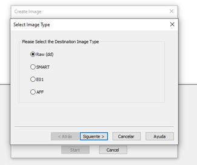
Información de la Cadena de Custodia[cite: 20]
Se llenaron los cinco campos obligatorios (Número de Caso, Evidencia, Descripción, Examinador y Notas) con información de InfoCrim-01. Estos datos se escribirán en el archivo de texto .txt asociado a la imagen para asegurar el seguimiento forense[cite: 20].
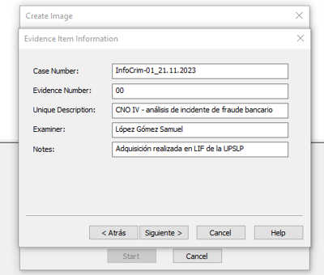
Carpeta y Segmentación[cite: 20, 21]
La imagen se configuró para guardarse en el directorio local InfoCrim13 y se nombró siguiendo el estándar infocrim_LopezGomezSamuel. Se mantuvo el tamaño de fragmentación por defecto en 1500 MB para generar archivos fáciles de gestionar sin aplicar compresión[cite: 20, 21].
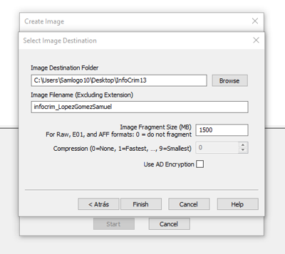
Activación de la Verificación[cite: 21, 22]
En la pantalla final se dejó marcada la casilla Verify images after they are created. Este paso es fundamental, ya que obliga a FTK a recalcular y comparar los hashes de la copia contra los de la USB original al terminar el proceso[cite: 21, 22].
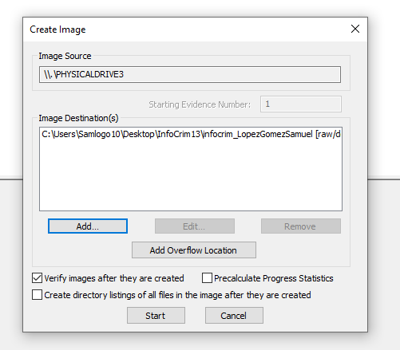
Etapa C. Ejecución y Verificación
Inicio de la Adquisición[cite: 22]
Al oprimir Start, comenzó la lectura de la memoria. Se documentó la marca de tiempo (02:40 p.m. según el reloj del sistema) para validar con el reporte final, asegurando la reproducibilidad del proceso forense[cite: 22].
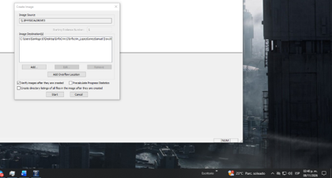
Fin de la Lectura USB[cite: 23]
A las 02:50 p.m., el sistema arrojó el mensaje Image created successfully tras un tiempo transcurrido (Elapsed Time) de 10 minutos con 4 segundos, durante los cuales no hubo interacciones para evitar cualquier alteración[cite: 23].
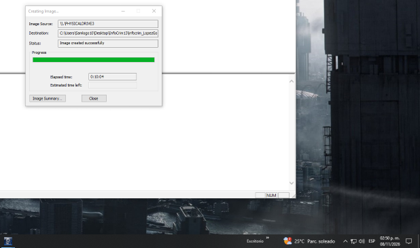
Resumen de la Adquisición[cite: 23]
Se abrió el menú Image Summary... para examinar inmediatamente el resultado final y comprobar la consistencia de los datos reportados contra la configuración introducida[cite: 23].
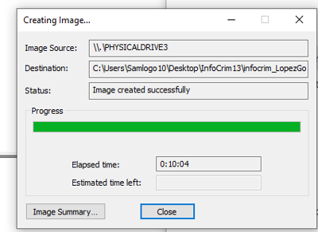
Geometría del Dispositivo (Summary Pt. 1)[cite: 23, 24]
El reporte confirmó el número de sectores y cilindros de la SanDisk Cruzer Blade, totalizando 30,031,872 sectores para los 14664 MB del dispositivo físico[cite: 23, 24].
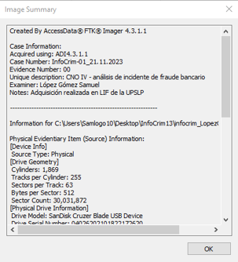
Segmentos y Hashes (Summary Pt. 2)[cite: 24]
Se validó la generación de los 10 segmentos de la imagen (.001 al .010) y el cálculo de los hashes criptográficos asociados para resguardar la identidad digital de la copia[cite: 24].
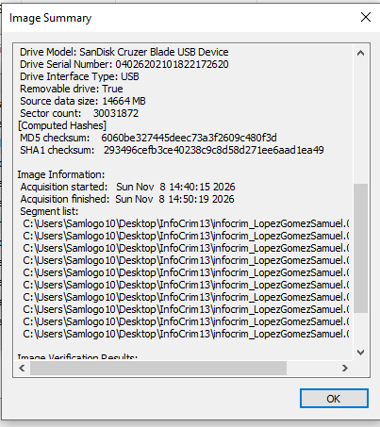
Validación de Integridad Matemática[cite: 25]
La herramienta finalizó comparando los hashes MD5 y SHA-1 recién leídos contra la copia en el disco; ambos arrojaron Match y 0 bloques dañados, confirmando que la imagen forense es idéntica bit a bit al original de 15GB[cite: 25].
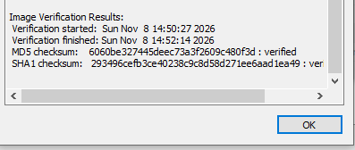
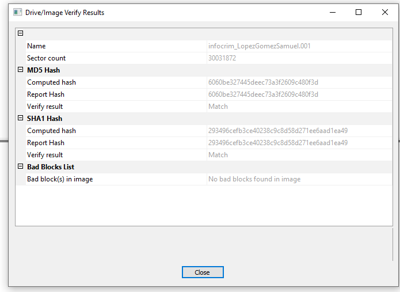
Verificación de Ficheros en Disco[cite: 25, 26]
Se abrió la carpeta destino en el Explorador de Windows, confirmando la creación de los 10 segmentos (9 de tamaño completo y el final) y la presencia crítica del archivo de reporte. Estos segmentos no deben abrirse directamente en el S.O.[cite: 25, 26].
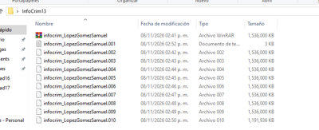
Revisión del Registro Oficial (.TXT)[cite: 27]
Se abrió el archivo .txt de FTK Imager. Dado que la imagen Raw (dd) no incrusta la cadena de custodia dentro del archivo (a diferencia de E01), este reporte de texto fungirá como el documento de respaldo de la adquisición oficial[cite: 27].
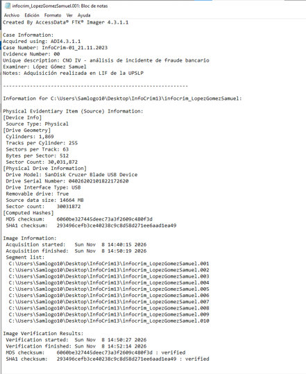